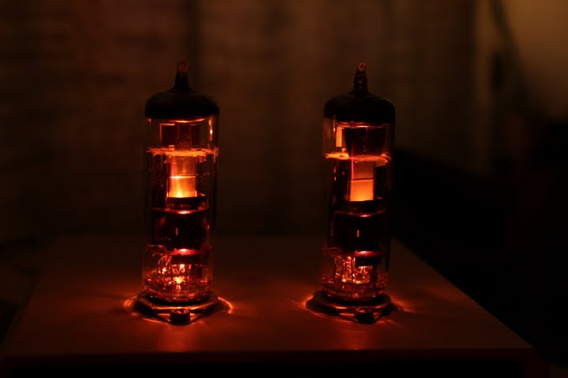
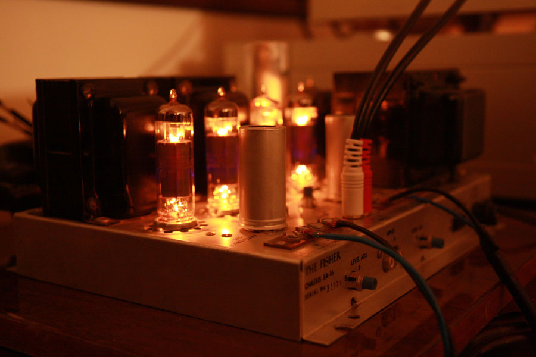
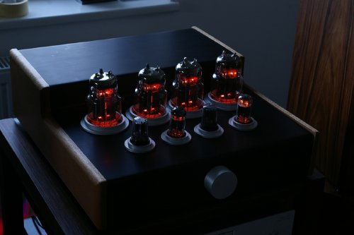
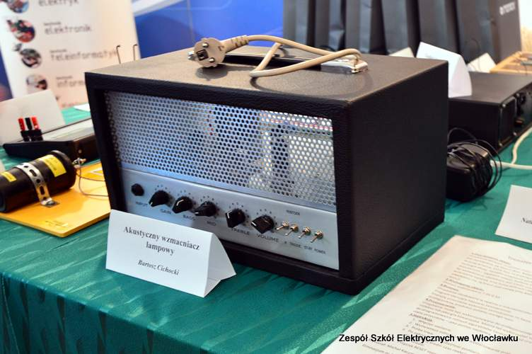
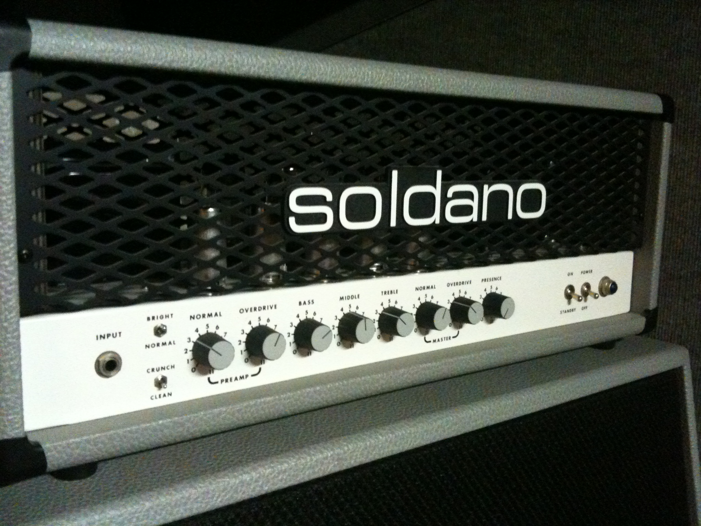

Witaj na stronie poświęconej tematowi lamp elektronowych!
Jeżeli nie wiesz co to jest lampa elektronowa, zajrzyj na stronę Trochę teorii. Jeżeli jesteś ciekawy czym odróżnia się lampa od tranzystora, odwiedź tą stronę. Lampy i urządzenia na ich podstawie zbudowane są piękne, wystarczy spojrzeć w galerii :)

Wzmacniacz OTL PCL86

Wzmacniacz 4xEL84 The Fisher SA-16

Wzmacniacz PP 4x6C33C

Wzmacniacz gitarowy EL84

Wzmacniacz Soldano SLO-100

Lampowa cewka Tesli